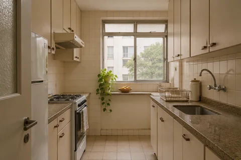
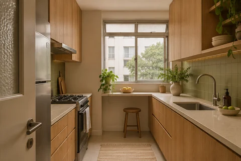

A circulação abre espaço.


A proposta reorganiza o encontro entre bancada e armários. A escolha dos acabamentos vem depois de entender onde se prepara a comida, o que precisa ficar à mão e como as pessoas circulam.
Levar cozinha ao pedido